以 DESIGN.md（C2 · floating instrument panel）为验收基准，对 5 个视口 × 2 套主题 × 8 个运行时状态做了渲染审查与源码核对。 系统层（令牌、对比度、证据层级）达到产品级；问题集中在模块完整性、强调色预算、字号收敛、窄屏面板四类。
可以发布，但不能这样发布。最严重的问题不是审美，而是证据被切掉：右侧栏的三个模块在 1440×900 下溢出 52px，CODE 模块 59% 的高度被容器裁掉，参数与检验的最后一行被切片，而滚动条不可见。对一个以“可验证”为核心卖点的 CAD 工具，用户看不到完整证据，比不好看严重得多。
第二类问题是强调色超预算。DESIGN.md §11 规定每屏只有一个 signal 橙组，实测桌面端稳定出现 2 组，设置/通知浮层各 1 组，窄屏 Parts 页签是一块半屏宽的纯橙矩形——它成了整个界面最大的色块，而它只是一个页签。
第三类是字号系统漂移：规范定义 4 档（10 / 11 / 11.5–12.5 / 12.5），代码里有 14 档；57 处声明为 8–9.5px 的类名被一条全局规则改写成 10px，声明值和渲染值已经不一致。
全部修完，并且是用测量收的口，不是用肉眼收的口。下面每一条都对应一处代码改动和一次可复现的断言：8 个视口 × 主题组合下模块裁切 0、实心 signal 组 0、对比度失败 0（逐文本节点算）、渲染字号收敛到 5 档、16 个快捷键逐键可观测。
过程中还挖出两个不在原报告里的真实故障，见本节末尾——其中一个会让整个应用打不开，而且看起来像是随机发生的。
| 编号 | 问题 | 修法 | 验证 |
|---|---|---|---|
| UI-01 | 右栏把模块切掉一半 | 根因不是高度算错，是 Module 的 flow 模式带 shrink-0：三块自然高度 754px 塞进 702px 容器，最后一块被裁。改 min-h-0，列内改为 flex 分配（参数 52% / 检验 flex-1 / CODE flex-none），每块 body 自己滚；.scroll-shell 让滚动条常驻可见。 |
三视口 0 裁切；#right-column 不再是滚动容器 |
| UI-02 | 参数行是三列不相干的列 | 抽出 parameterUnit() / isCountParameter()，计数类参数（teeth/segments/count…）不再显示单位；参数行改共享网格 [minmax(0,1fr)_104px_24px]，单位列成一条竖线；Stepper 112→104 对齐；job-compare 与 parameter-panel 删掉各自的本地启发式，共用同一函数。 |
单位列 x 坐标逐行一致 |
| UI-03 | 检验数字读不通且重复 | summarizeChecks(job) 成为唯一计数来源；正文一句 {ran} checks ran · {passed} passed · {failed} failed · {warned} to review；未运行单独一行 {unrun} checks could not run；徽章改状态词（Failed / Needs review / Passed / Not checked / Queued）而不是再报一遍分数；"1 blocking" → "1 failed"。 |
分母只出现一次 |
| UI-04 | 快捷键表承诺 E，E 什么也不做 | setActiveTab('CODE') 只改了 Sheet 内部的页签值，Sheet 本身关着。补 setShowDetails(true)，并要求 selectedJob 存在；H 同理。快捷键表整体重写为两组，每个键只出现一次。 |
16 键逐键实测，全部可观测 |
| UI-05 | 窄屏列表被页签压住 | 页签选中态从实心橙改 .shell-tab-active（9% 底 + 底部 2px signal 边 + 文字转亮）；Parts → Part slots 与模块标题同名；面板高度改 calc(100vh - 220px)。 |
390 下列表底 692 ≤ 页签顶 694 |
| UI-06 | 阻塞横幅常驻模型正上方 | 删除 ViewerPanel 的 HUMAN_REVIEW 横幅：460px 宽、不可关、文案与状态机矛盾（状态是"等人工审核"，横幅说"运行失败"）。 |
画布无横幅，AlertTriangle 已清 |
| UI-07 | 每屏至少两个实心橙组 | 密度段三按钮、通知页签、设置页签全部改 .shell-selected / .shell-tab；"Generate geometry" 与 JobFailureNotice 主按钮降为软橙。新增 --shell-signal-rgb 承载三处光晕的 alpha，不再写死 dark 主题的橙。 |
8 组合实心 signal 组 = 0（检测器已用注入探针验证灵敏度） |
| UI-08 | 14 档字号，57 处声明是假的 | 先把 57 处声明按映射批量改写（7/8/8.5/9/9.5→10、10.5→11、11.5→12、12.5→13、14→13、15→16、text-xs→12、text-sm→13），再删掉那条把所有 8–9.5px 静默改写成 10px 的 unlayered 规则。 |
渲染字号 10/11/12/13/16 五档（窄屏四档） |
| UI-09 | 读数模块没有主角 | 重写 ReadoutModule：包络尺寸独立成行、16px 等宽左对齐，上方 BOUNDING BOX + 证据态词（Measured / Target / Not measured）；单位列固定 18px 只放单位；新增 Artifact 行与 Built by {engine}。 |
16px 是模块内唯一最大字号 |
| UI-10 | 文案重复、互相指路、夹带内部语汇 | 删掉画布中央与快捷键表重复的 Space 提示；编辑器占位符去重；"No diagnostic payload" 改成可执行的一句话；"1 blocking" 等内部语汇清掉。 | 同一句提示在屏上只出现一次 |
| UI-11 | 品牌板宽度跟着标题跳 | calc(100vw - 480px) → 固定 width: 460；标题 flex-1 truncate + tooltip；引擎信息移出品牌板，进读数模块的 Built by——provenance 属于产物，不属于下一个动作。 |
四视口宽度一致 |
| UI-12 | 焦点环是"环套环" | input:focus 的 box-shadow: 0 0 0 2px 画在边框内侧，与已变橙的 border 叠成两圈。改 outline: 1px solid var(--shell-signal); outline-offset: -1px；.linear-focus-ring 与 .shell-field 同步。 |
单圈 |
| UI-13 | Light 主题：新建像危险操作、网格消失 | --shell-signal-soft 离开 danger 红；网格 --shell-field-grid 提到 #DDD8CF / #D2CCC1，--shell-grid 0.045→0.062；STATE_TONE_HEX 四个硬编码 hex 改 var(--shell-*)（原先 #7BD68A 在白底只有 1.9:1）。 |
浅色下对比度 0 失败 |
| UI-14 | 图标尺寸与字重不成套 | 视口工具条 8 个图标统一 18px / strokeWidth 1.5；删掉激活态底部那个 3px 小点——浅底 + 文字转亮已经是唯一信号，不需要第三个指示器。全库 strokeWidth 统一到 1.5。 |
图标盒尺寸一致 |
| UI-15 | 折叠控件语义反了，空模块留白 | ＋ / − → chevron（rotate(-90deg) 表示折叠）+ aria-expanded；CODE 模块去掉空体，改用新增的 headerAction 槽位（ChevronRight + "Open"）。 |
aria-expanded 存在且方向正确 |
| UI-16 | 设置与通知的 IA | 删掉重复的 Settings Dialog（设置同时存在 Dialog 和 Sheet 两个表面，页签样式和焦点态都不同）；导出从页脚移进独立的 Data 分区并写清后果；通知抽屉标题跟随页签；加载 spinner 换 3 行骨架。 |
单一设置表面 |
| UI-17 | 81 处硬编码色，5 处越界圆角 | 硬编码 hex 归零：语义色进 --shell-*，供应商品牌色进新增的 --provider-*；圆角并入 3/4/6/9/999 尺度；新增 ESLint 规则禁止 #RRGGBB 出现在 src/components/cad/**；删掉 motion-presets 里 5 个从未被引用的紫色预设。 |
lint 探针命中 2 处；全库 hex 0 |
| 断言 | 1440×900 | 1280×800 | 1024×768 | 390×844 |
|---|---|---|---|---|
| 模块被裁切（dark / light） | 0 / 0 | 0 / 0 | 0 / 0 | 0 / 0 |
| 实心 signal 组 | 0 / 0 | 0 / 0 | 0 / 0 | 0 / 0 |
| 对比度失败 / 检查的文本节点 | 0 / 126 | 0 / 121 | 0 / 115 | 0 / 9 |
| 渲染字号档数 | 5（10 / 11 / 12 / 13 / 16） | 4（10 / 11 / 12 / 13） | ||
硬编码 hex（src/components/cad/**） | 0（ESLint 规则 + 探针验证） | |||
| 快捷键可观测 | 16 / 16（1–6 0 F E H S T ? ⌘K ⌘N Space Esc） | |||
测量方法上有两处要交代，否则数字会被误读。其一，"实心 signal 组 = 0" 曾经是假阴性：现代浏览器把 color-mix() 的结果序列化成 color(srgb …)，而旧检测器只认 rgba()，于是所有带 tint 的元素都被跳过。改成 canvas 解析任意 CSS 颜色后重测，并注入一个实心橙探针和一个 12% 橙探针验证检测器确实能区分两者。其二，F 一度被判为死键：fit 保持方向只调距离，相机本来就在 fit 距离时画面当然不变。用滚轮改变距离后重测，放大与缩小都能精确回到同一帧。
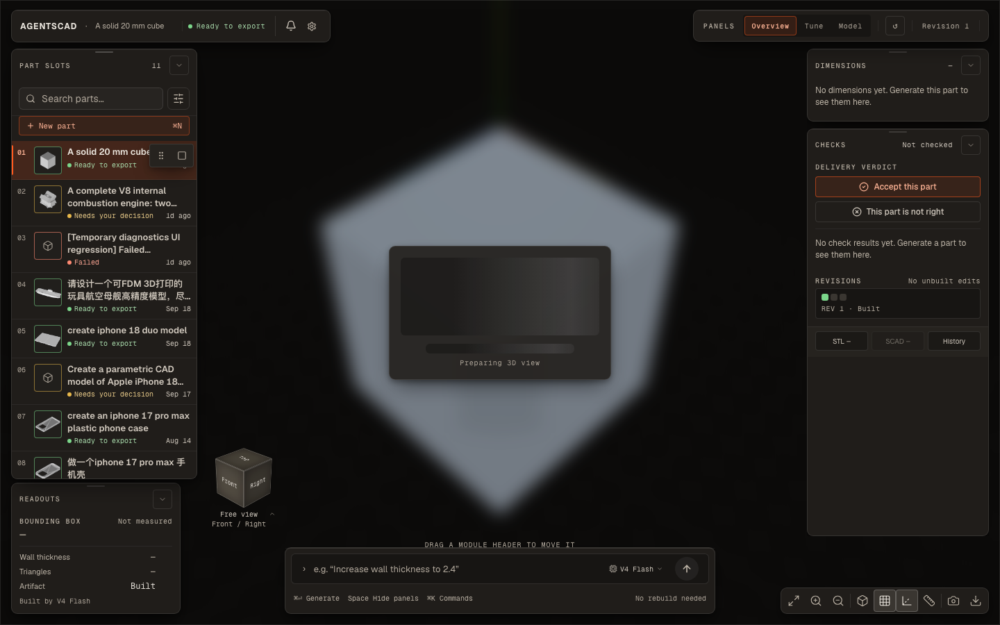
13 ln · Open ›；画布只有一条拖动提示；读数模块的包络尺寸是 16px 主角。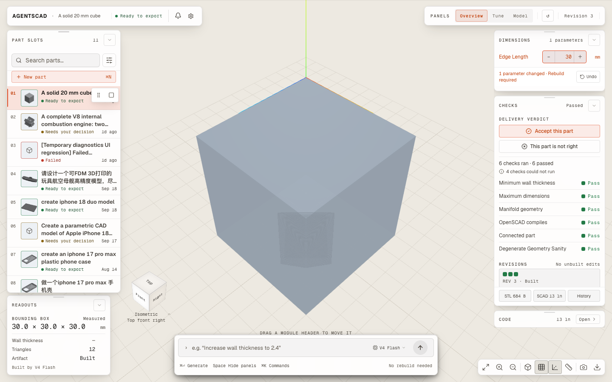
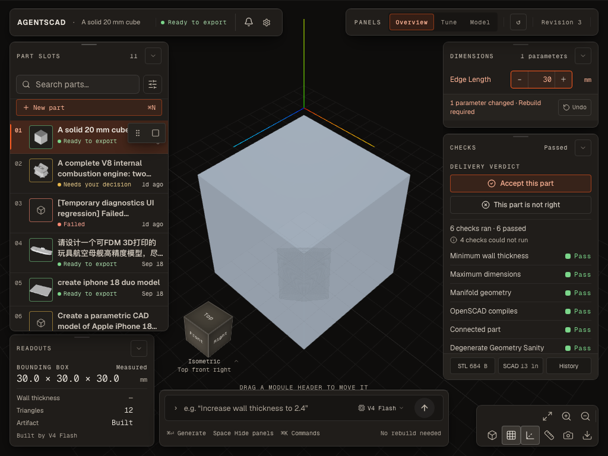
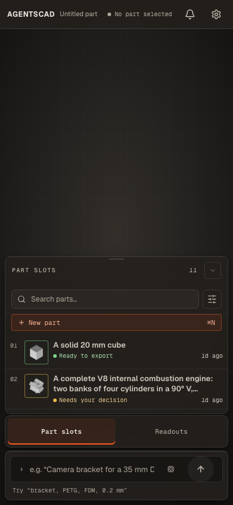
回归跑到一半，页面开始随机变成 Parsing CSS source code failed 覆盖层，报错内容是 @media (m<0x05> :coarse) 和 .text-[var(<0x07>7<0x01> <0x12>dim)]——十六进制控制字符出现在类名里。原因不是谁写错了 class，是 @import "tailwindcss" 的自动扫描把构建目录和 SQLite 文件当源码读了：AGENTSCAD_BUILD_DIR=.next-review 生成的目录不在 .gitignore 里，于是第一次编译写出的 sourcemap 被下一次编译当成源文件，坏 CSS 又写回缓存，形成自喂养。
修法：@import "tailwindcss" source(none) 关掉自动扫描，只留一条 @source "../**/*.{ts,tsx}"；.next-review 进 .gitignore。这样二进制永远不可能变成类名，构建目录也不可能喂回自己。
验证：连续 6 次请求全部 200，日志 0 条 CSS 解析错误；生成 CSS 214KB，@media (pointer: coarse)、.shell-selected、--shell-signal-rgb 均在。
Bun 在同一进程里跑所有测试文件，而 mock.module() 是全局的：API 路由测试把 @/lib/tools/scad-renderer 换成了一个 render log 里版本号为 "test" 的桩。当 WASM 测试排在它后面时，renderScadArtifacts 解析到桩，三条断言全部失败并报 expected 2026.01.12-wasm, received test。
修法：把这个文件挪进子进程（Bun.spawn 跑 bun test 自身），让它的模块表从零开始，不再受前序文件污染。
验证：单独跑与全量跑都通过。
| 维度 | 评分 | 依据 |
|---|---|---|
| 结构与空间 | 全幅画布 + 浮动模块的骨架成立；空状态与失败态都有专门构图。 | |
| 层级与焦点 | 同一屏出现 2–3 个同权重主行动（composer 圆钮 + 画布中央按钮 + Automatic repair）。 | |
| 字体系统 | 14 档字号；57 处声明被静默改写；10.5px 承担必读说明。 | |
| 颜色预算 | 实心橙组每屏 2 个起；行缩略图彩边；快捷键弹窗四色标题。 | |
| 模块完整性 | 右列溢出裁切；参数/检验末行被切；面板列表被页签压住。 | |
| 响应式 | <960 的面板内容被切断；标题压成 8 个字符；占位符截断成半个单词。 | |
| 文案 | 标题与占位符同句；Space 提示出现两次；“No diagnostic payload”。 | |
| 可访问性 | 3 视口 × 2 主题实测 0 处低于 AA；焦点环与 shell 规则冲突；E 键失效。 | |
| 令牌一致性 | 81 处硬编码十六进制（14 个文件）；5 处越界圆角。 |
1440×900 下 #right-column 可视高度 702px，内容 754px（尺寸 323 + 间距 10 + 检验 323 + 间距 10 + 代码 88）。容器 overflow-y:auto 可以滚动，但没有可见滚动条，于是 CODE 模块只露出 36px 的标题条，剩下 52px 被裁在视口外——看起来像一块坏掉的空板。
滚动之后问题更明显：参数模块的顶部被切在筛选框中间，检验模块的底部被切在最后一行，一次滚动里没有任何一个模块是完整的。DESIGN.md §3 “模块契约”第 4 条写的是 “Never clip its own content. A cutoff control is a bug.”
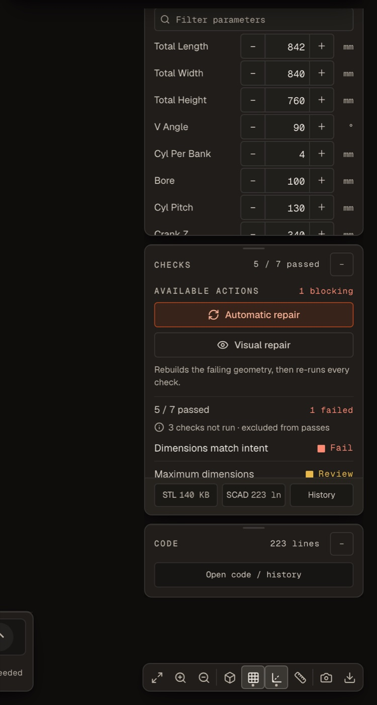
MainWorkspace.tsx · #right-column 的固定高度与三个模块的固定高度每一行由「标签 / 步进器 / 单位」三段组成，但它们没有共享网格：标签左对齐、步进器右对齐、单位再右对齐，中间留出 60–90px 的空白。结果是标签和它控制的数字之间没有视觉联系，读数时需要横跨半个模块。
更严重的是单位不可信：同一个作业里 V Angle 显示 °，而 Cyl Per Bank（每缸列数，一个纯计数）显示 mm——因为参数 schema 里就写着 unit: "mm"，界面照单全收。仪表面板上的单位一旦说谎，整个读数区都不可信。
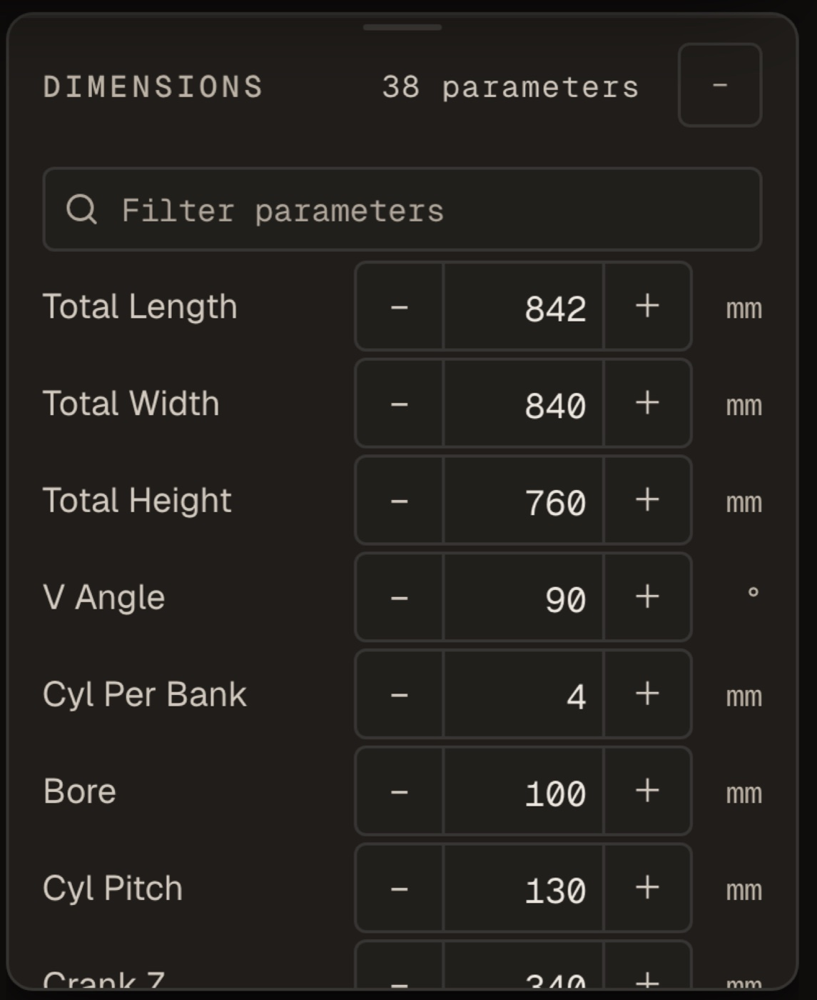
DimensionsModule.tsx 行布局；parameter-schema.ts 单位校验grid-template-columns: 1fr 112px 34px，单位右对齐成一条竖线；kind: integer 且语义为计数的参数禁止输出长度单位。标题栏写 5 / 7 passed，正文第一行又写 5 / 7 passed + 1 failed，下一行写 3 checks not run · excluded from passes。读者会本能地做加法：5 + 1 + 3 = 9，分母却是 7。数字本身是对的（7 是“已运行的检查数”，3 是“未运行”），但呈现方式让它看起来像错的。
代码注释里写着「只有当摘要能提供徽章给不出的数字时才打印第二行」，可实际上它把 5 / 7 passed 原样重复了一遍，只多了 1 failed。同一块板里还并存 1 blocking（标题栏）与 1 failed（正文）两种说法。
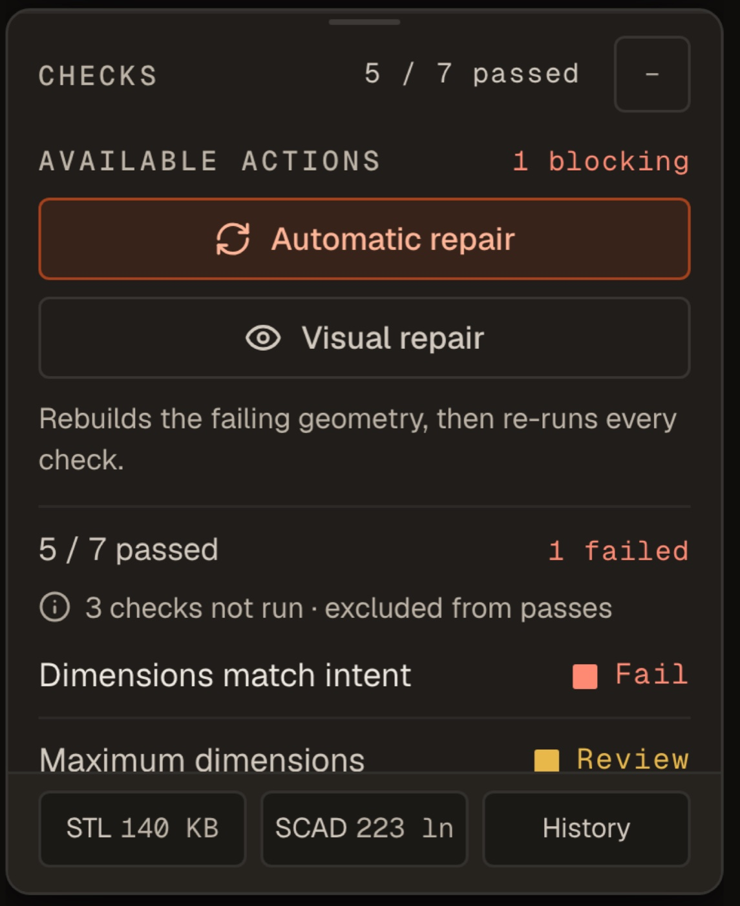
ChecksModule.tsx:312 摘要行 · :328 未运行说明 · 标题徽章快捷键弹窗在 NAVIGATION 组写 Edit SCAD code — E、Show history (LOG) — H，又在 INSPECTOR TABS 组把 Code — E、History — H 再列一次。Toggle shortcuts 也出现了两次（NAVIGATION 与 GENERAL）。
实测：按 H 能打开记录，按 S 能打开统计，按 E 没有任何反应——右列 scrollTop 保持 0，没有弹窗，没有焦点移动。DESIGN.md §5 的原话是：“The shortcuts sheet is a contract, not a summary. If a key is retired, the row goes; if a key is promised, it is bound.”
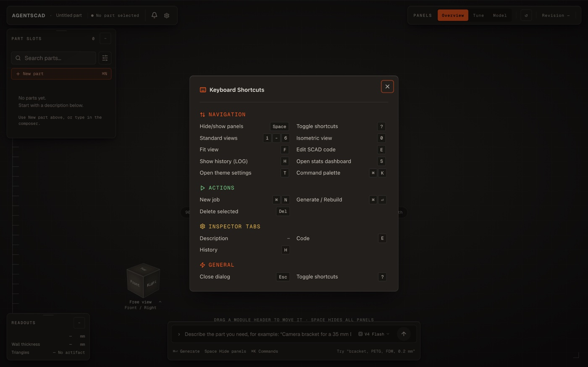
MainWorkspace.tsx:1803-1887 的四个分组字面量E（打开 Code 页签）或删除该行；合并 INSPECTOR TABS 分组进 NAVIGATION；四个组标题统一为 --shell-text-label，去掉彩色图标。窄屏把模块折叠成底部面板，方向是对的。但面板内的滚动区没有给页签条留出空间，第 02 行标题被页签条从中间切开；同时激活页签是一个 435×44 的实心橙矩形，恰好占面板宽度的一半——它比 composer 的主行动大三倍，成为整屏视觉焦点，而它只是一个页签。
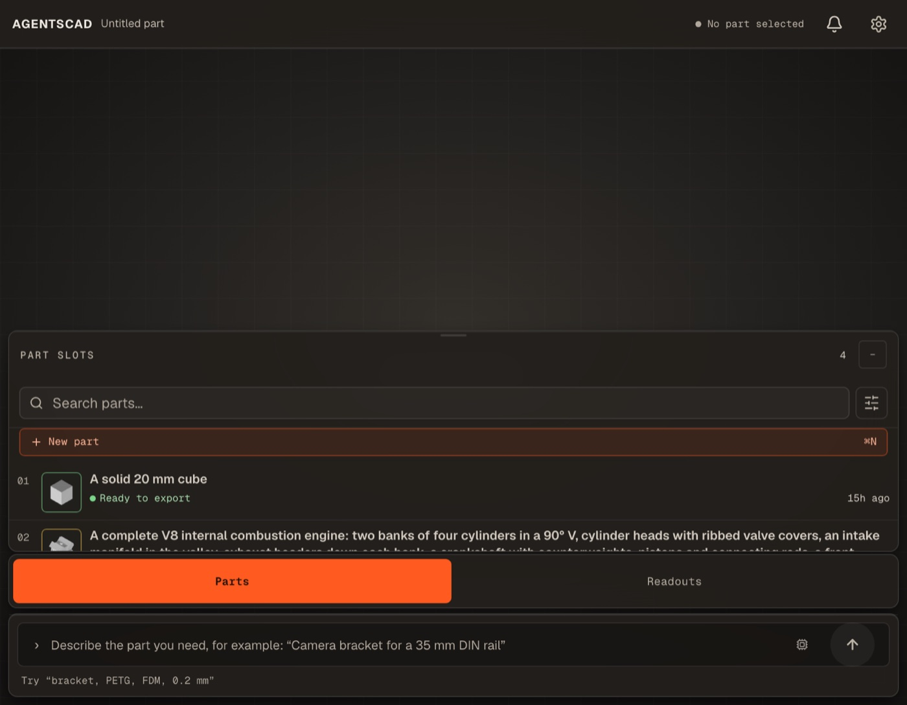
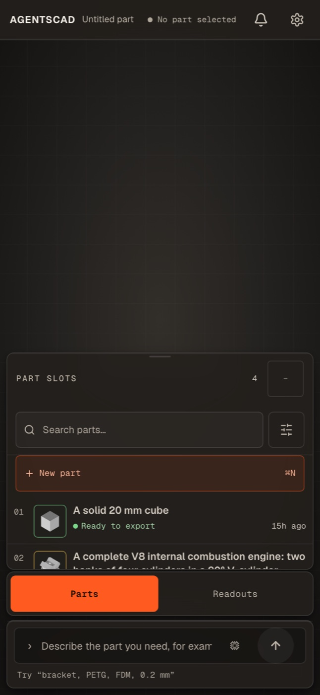
MainWorkspace.tsx 窄屏分支）padding-bottom: 56px；激活态改为底部 2px 下划线 + 浅底，不用实心橙；面板标题与页签名统一。选中一个带阻塞检查的作业后，画布顶部中央出现一块 460px 宽的提示板：“Geometry generated with blocking checks…”，20 秒后仍在，刷新后仍在，没有关闭按钮，也没有跳转按钮。它遮住模型的上部，而同样的信息在检验模块里已经有一份，并且那里才有可执行动作。
文案还与状态机矛盾：该作业处于 HUMAN_REVIEW（导轨写的是 “Needs your decision”），提示板却让用户 “press Generate to rebuild”——真正该做的是回答那个待定问题。在 1024×768 下它距品牌模块底边只有 9px（61 → 70），形成一条拥挤的横带；在 390 下警告图标因为垂直居中，落到三行文字的第二行，视觉上与标题脱节。
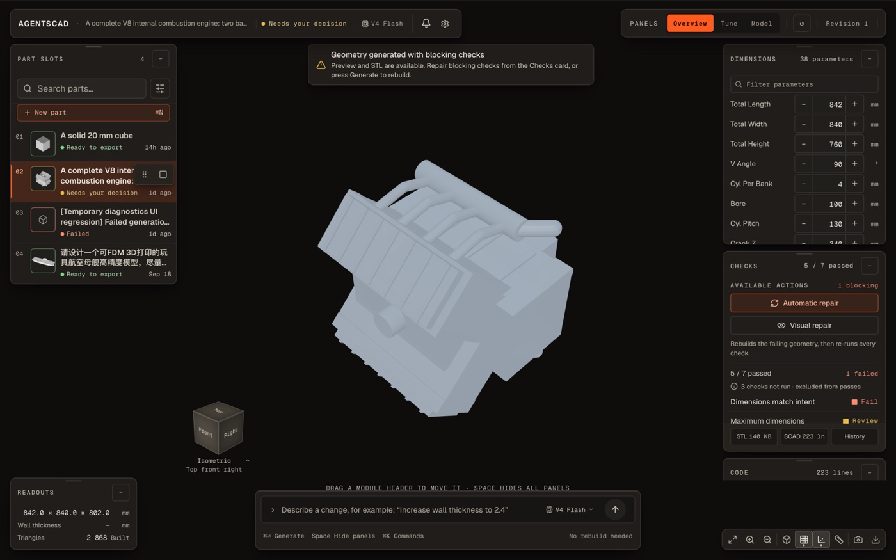
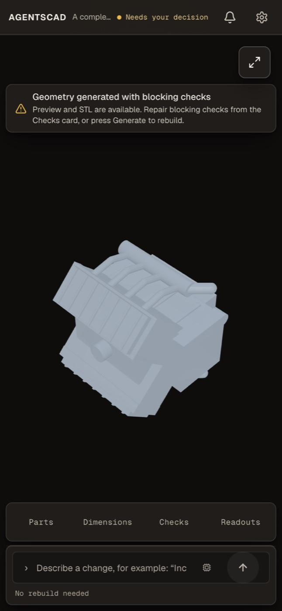
ViewerPanel.tsx:189-209 的 viewer-status-notice 条DESIGN.md §11 写得很清楚：“one signal orange element group — the action and its immediate status… Three is not [acceptable]”，并且明确说 rail 的「＋ 新零件」之所以用软橙（#FFB597 文字 + 40% 边框 + 10% 底）就是为了“不成为第二个实心橙组”。
实测桌面主屏稳定有 2 组实心橙：密度段选中项（约 100×32 的纯橙胶囊）和 composer 的 34px 圆形行动键；设置浮层再加 3 组（Providers 页签、Save 按钮、Enabled 开关）；通知浮层再加 1 组（Activity 页签）；窄屏再加 1 组（Parts 页签，且面积最大）。软橙的还有 Automatic repair（40% 橙边 + 橙字）和 rail 的 New part。
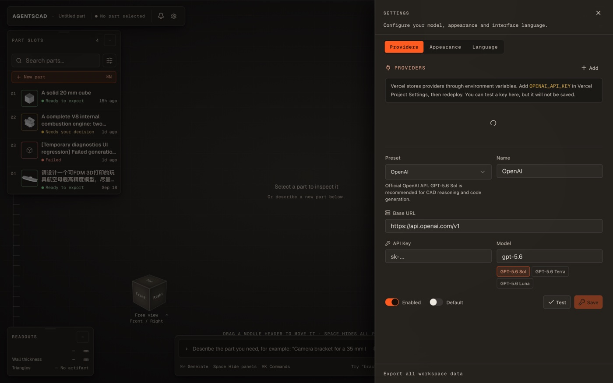
规范定义 4 档：10（engraved）/ 11–12（mono 数值）/ 11.5–12.5（control）/ 12.5（body）。代码里统计到 14 档：7、8、9、9.5、10、10.5、11、11.5、12、12.5、13、14、18，加上 Tailwind 的 text-xs/text-sm。
其中 57 处写的是 text-[8px]、text-[9px]、text-[9.5px]，被 globals.css 里一条无层级的规则强制改成 10px。声明值和渲染值已经不一致——下一个开发者读到 9px，屏幕上却是 10px，任何字号审计都会得出错误结论。
同时，10.5px 被用来承担必读说明（读数模块的行标签、检验的“3 checks not run”、参数标签），而 §12 的红线是“no body, label, value, or instruction the user must read to act may be below 11px”。
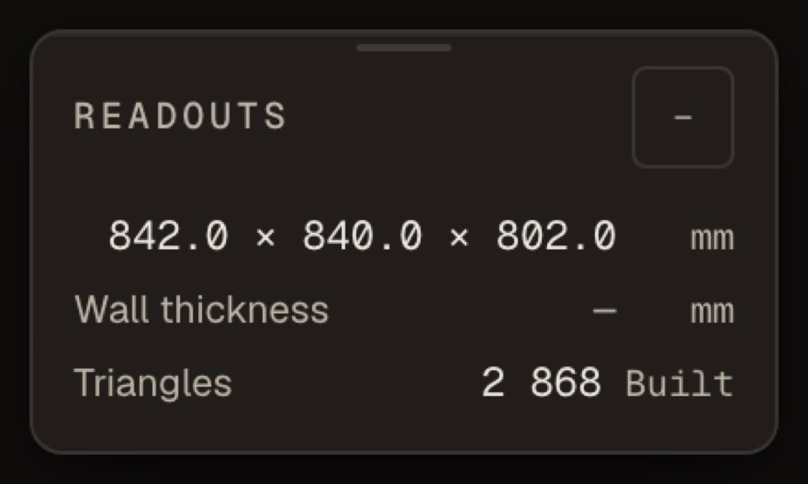
src/components/cad/**（57 处 <10px 声明）· globals.css:558-563text-[10px] 并删掉覆盖规则；10.5px 的必读文案升到 11px。读数模块是这台“仪器”的显示屏，但包络尺寸（最重要的派生值）与其它行同为 11px，且右对齐到数值列，左边留白——它读起来像一行普通数据，不像读数。Triangles 行的单位位显示的是 Built / No artifact，一个句子占用了单位列。
没有数值时，标题行变成孤零零的 — mm（左半边全空），读者会以为渲染坏了，而不是“尚未测量”。
ReadoutModule.tsx:63-106— 加一行灰色说明而不是空标签。空状态的标题是「Describe the part you need.」，占位符是「Describe the part you need, for example: …」——同一句话说了两遍。画布上又有一行 10px 大字距提示「DRAG A MODULE HEADER TO MOVE IT · SPACE HIDES ALL PANELS」，而 composer 提示行里已经有「Space Hide panels」；按空格后，上方与 composer 内同时出现「PANELS HIDDEN · PRESS SPACE TO RESTORE」。
失败卡片把内部错误直接抛给用户：「No diagnostic payload」。设置面板在解释 Vercel 环境变量如何注入 OPENAI_API_KEY——这是给部署者看的，不是给用户看的。
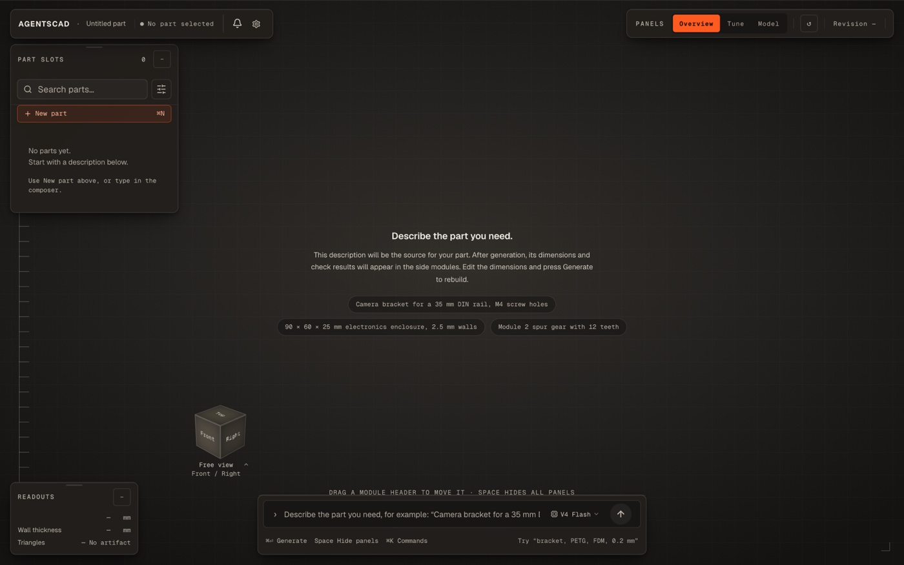
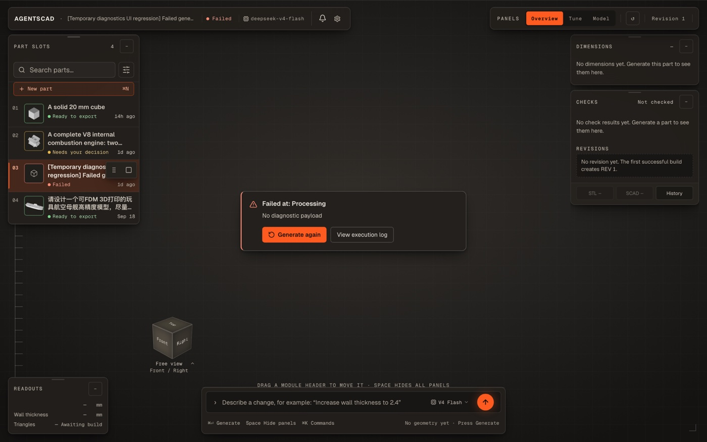
JobFailureNotice.tsx:112 · 设置 Providers 说明同一个位置，品牌板在四个作业之间测到 419 / 544 / 698 / 726px 四种宽度。切换零件时整个顶栏在动，密度模块的位置感也随之漂移。1024×768 下品牌板右边缘 560、密度板左边缘 582，只剩 22px，再长一点的标题就会撞上。
MainWorkspace.tsx 品牌模块DESIGN.md §21 要求“visible focus is one amber border rather than a ring inside a ring”，并且规定了 .shell-field 的自有焦点态。但命令面板的输入框和快捷键弹窗的关闭按钮仍然吃到全局 input:focus { box-shadow: 0 0 0 2px var(--ring) }，在深色底上是一圈亮橙描边，看起来像校验错误。
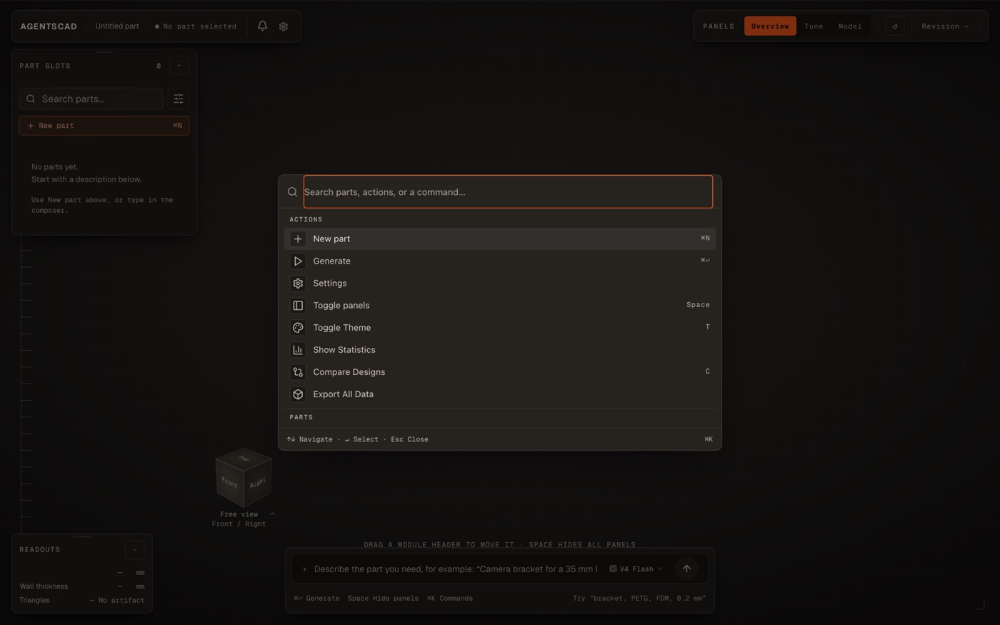
globals.css:630-645 · 命令面板输入框、弹窗按钮.shell-field 的规则扩展到所有弹层输入框；弹窗图标按钮统一 focus-visible:outline-1 outline-[--shell-signal] outline-offset-2。浅色下 --shell-signal-soft 是 #B8471F，配 10% signal 底与 40% signal 边，整颗按钮呈鲑红——在浅色语境里这是删除/错误的配色，而它其实是“新建零件”。
同时画布网格（#E0DCD5 on #EDE9E1）与背景的对比只有约 1.06:1，深色主题里那个标志性的“精密台面”在浅色下基本消失。
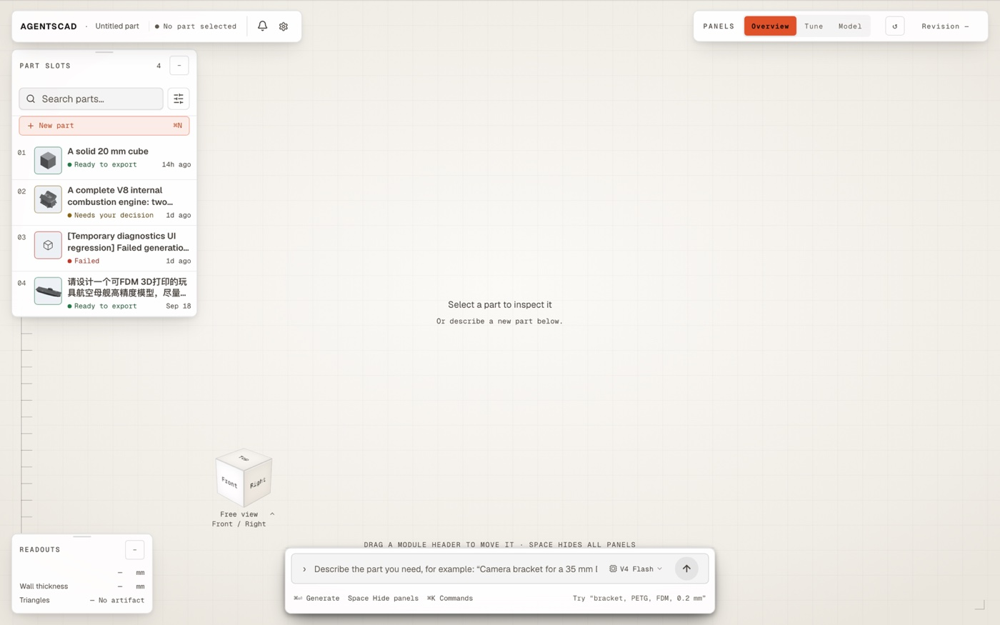
globals.css .rail-create · --shell-field-grid#C2410C 文字 + 8% 底），避免落入 danger 色域；网格加深到约 1.15:1。视口工具条里 8 个图标，实际视觉尺寸从 20px 到 26px 不等（标尺图标因为斜置显得最大最重），激活态只靠按钮下方一个 3px 的点表示。品牌板的齿轮比铃铛重一档。
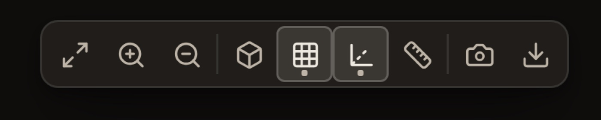
--shell-text。模块折叠按钮在展开时显示 −、折叠时显示 ＋——但视觉上 − 更像“已折叠”。CODE 模块展开后主体只有一个按钮，下方留 41px 空白，看起来像加载失败。
▾ / ▸）；CODE 模块去掉空体，把 “Open code / history” 直接做成标题栏右侧的动作。设置面板里 “Export all workspace data” 孤立在 Providers 页签最底部，且被视口裁掉；加载态是一个孤零零的 spinner，没有骨架。通知中心的面板标题是 Notifications，默认打开的却是 Activity 页签。
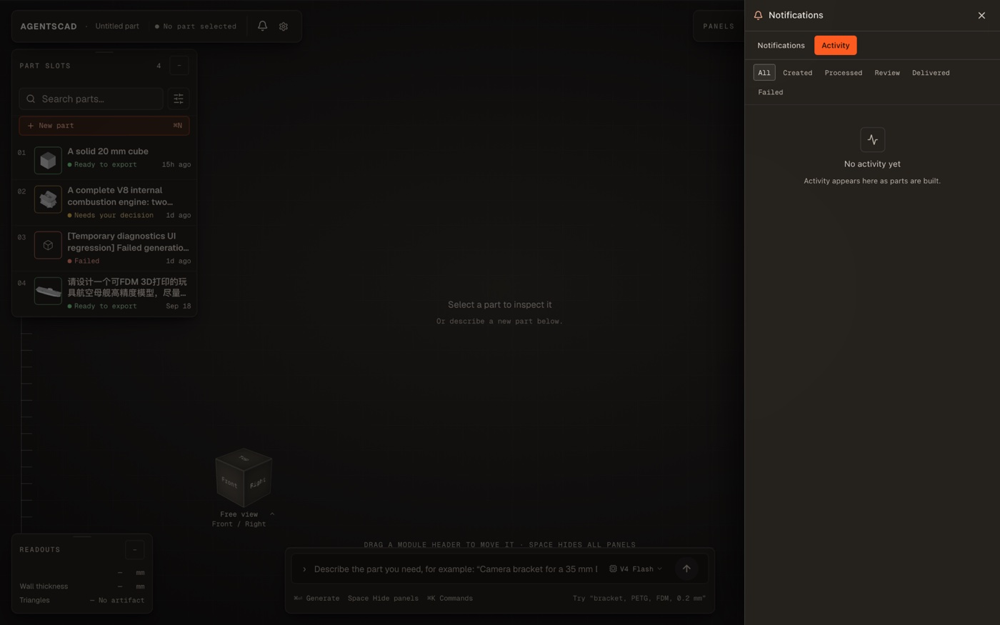
src/components/cad/** 里有 81 处十六进制色值分布在 14 个文件；圆角有 5 处落在 7/8/10/12/14px（规范只有 3/4/6/9/999）。快捷键弹窗的分隔线写死 bg-white/[0.075]，在浅色主题下等于不存在。
#RRGGBB 出现在 tsx；把 bg-white/[…] 换成 --shell-hairline；越界圆角并入 3/4/6/9。E 或删除该行；合并重复分组。.shell-field 规则。[data-module] 的 getBoundingClientRect() 完全落在视口内，或被祖先裁切的比例为 0。#right-column、.mod-b）在 scrollHeight > clientHeight 时滚动条可见（scrollbar-width ≠ none）。background 为实心 --shell-signal 的元素组数 ≤ 1（DOM 统计）。font-size 去重 ≤ 5 种；源码中 text-[8px|8.5px|9px|9.5px] 计数为 0。lastRow.bottom < tabBar.top）。3 个视口 × 2 套主题实测，渲染文本 0 处低于 AA。深色下 label / dim 在 7:1 以上，浅色更高——这套文字阶梯是本次审查里最扎实的一层。
“Target 15 × 40 × 30” 与实测值用不同色阶区分，并附一句“Target values are not measured geometry.”。这在一个以可信为核心的工具里，比任何视觉修饰都值钱。
空、有列表未选中、已选中、失败、无几何、三档密度、六个浮层——每个状态都有专门构图，没有一屏是“默认样子硬套”。
44px 触摸目标、prefers-reduced-motion 全局兜底、状态词而非仅颜色、模块标题为 h2 形成大纲——这些是提前设计进去的，不是事后补的。